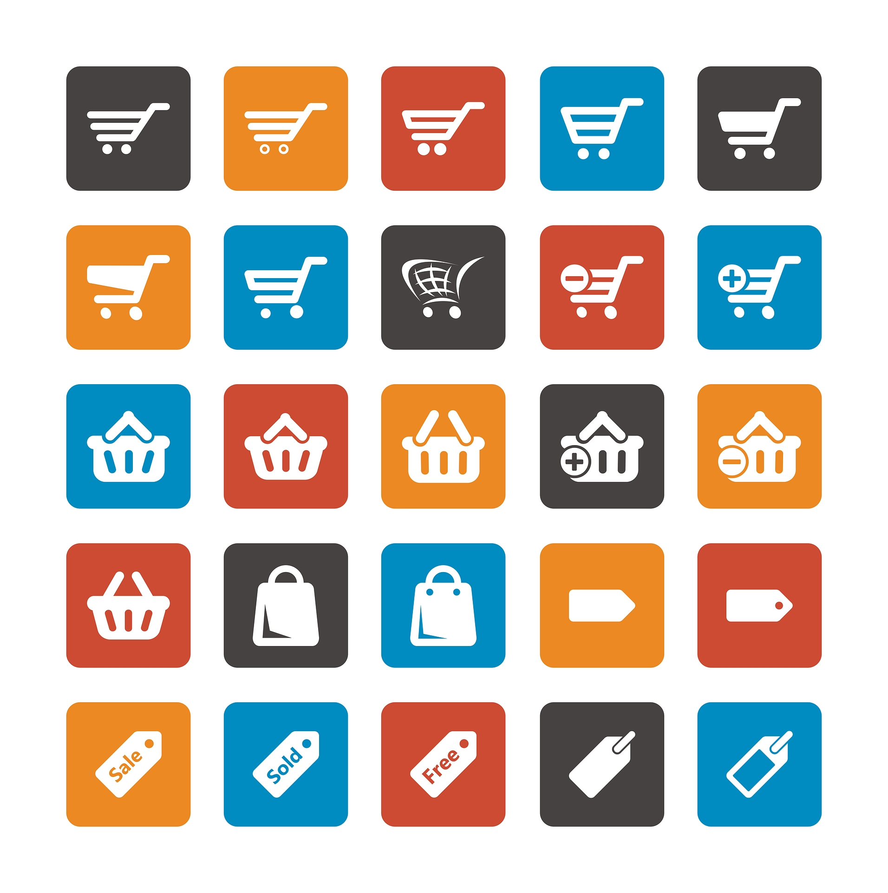

Маркетинговые исследования перед разработкой сайта

Разработка веб-портала уже давно заключается не только в дизайне и кодировании. Безусловно, грамотный код является неотъемлемой частью любого веб-проекта, но такой ресурс может разработать любая квалифицированная группа разработчиков, при этом ресурс не будет обладать никакими конкурентными преимуществами, ведь используется одна и та же схема разработки, основанная только на собственном опыте дизайнеров и программистов. Для разработки успешного и приносящего доход веб-портала необходимо провести надлежащие исследования, что может предоставить вам множество конкурентных преимуществ.
1 . Изучение карты поведения клиента (CJM, Customer Journey Map)
Построение карты дает возможность определить поведенческие паттерны потребителей и улучшить взаимодействие с ними на сайте. Определяются шаги, которые клиент делает до покупки и, соответственно, точки взаимодействия клиента с ресурсом. На основании этого, прорабатываются пользовательские качества посадочных страниц на веб-портале. Важно понимать, что одно неудачное взаимодействие посетителя с ресурсом отбивает желание пользоваться им в дальнейшем.
2. Анализ продаваемого продукта или ключевых товарных групп (Product Research)
Проводится анализ собственного продукта, выделяются ключевые эксплицитные и имплицитные характеристики с точки зрения клиента, сравнительный анализ качеств и цен конкурентов, представленность товарных групп с выделением ключевых направлений бизнеса. Таким образом, можно сфокусировать внимание посетителя на необходимые группы товаров, выгодно подать ключевые преимущества товаров на веб-портале и выделиться на фоне конкурентов.
3. Конкурентное исследование. (Competitor Research)
Включает в себя анализ визуального оформления, уникального торгового преимущества, маркетинговых фишек (программы лояльности, формы захвата, чат-боты и т.д.) и инструментов, используемых на веб-ресурсах. При необходимости проводятся дополнительные исследования – составление SWOT-анализа, карты восприятия. На основании полученных данных формируются успешные пересечения порталов конкурентов и внедряются при разработке сайта.
4. Анализ ключевых слов (Keyword Research)
Проводится исследования запросов в популярных поисковых системах (Яндекс, Google). Благодаря собранной информации можем определить потребность потребителя, и как он ее описывает, сегментировать целевую аудиторию и определить уровень осведомленности в продукте. Собранные ключевые слова и фразы также используются не только в контенте сайта, но и в более технических частях веб-страниц, таких как заголовки, метатеги, имена файлов, изображений и т.д. что в будущем приведет к увеличению целевого трафика на веб-ресурс
5. Анализ тенденций рынка (Industry Trends)
Знания тенденций рынка дадут массу информации о поведении клиентов, как текущих, так и прогнозируемых. Помимо этого, при разработке архитектуры веб-ресурса можно сразу закладывать функции, которые будут востребованы в будущем, что приведет к существенной экономии бюджета и будет гарантировать, что ваш портал не устареет в ближайшие годы. Тщательное проведение анализа даст возможность понять ваших клиентов, пути принятия решений, что влияет на их выбор перед тем, как дать им что-нибудь. Зачастую, на этом работа маркетолога не заканчивается. Собрав и проанализировав необходимую информацию можно интерпретировать ее в прототип ресурса. Таким образом можно четко изобразить то, как вы видите будущий сайт и передать его на следующие этапы разработки. Важно понимать, что разработанный портал с помощью маркетолога не может гарантировать высокие конверсии или какое-то количество лидов. Так как есть ряд факторов, на которые маркетолог в будущем влиять не сможет. Это релевантность трафика, нагоняемого на ресурс через рекламу, качество SEO-оптимизации, дизайнерские и программные решения при разработке и т.д. Созданный при помощи маркетолога веб-портал может гарантировать: максимальную заточенность под целевую аудиторию. Портал будет соответствовать ожиданиям потенциальных клиентов в плане контента, структуры, сервисов и фишек, применяемых в данной нише; дополнительную мотивацию для посетителя приобрести товар/услугу за счет фокуса на посадочных страницах на ключевых свойствах и преимуществах, влияющих на принятие решения; конкурентоспособность ресурса в интернете за счет применения существующих успешных решений в его бизнес-нише и уникального торгового предложения.